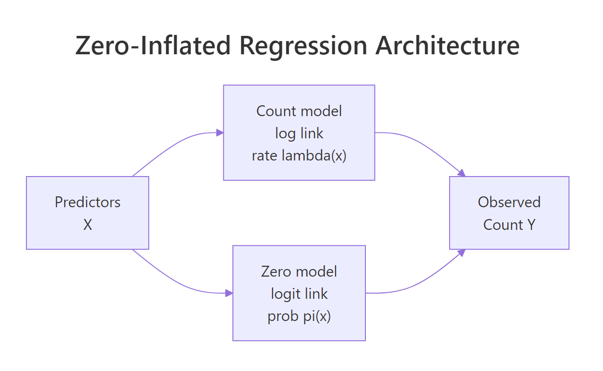
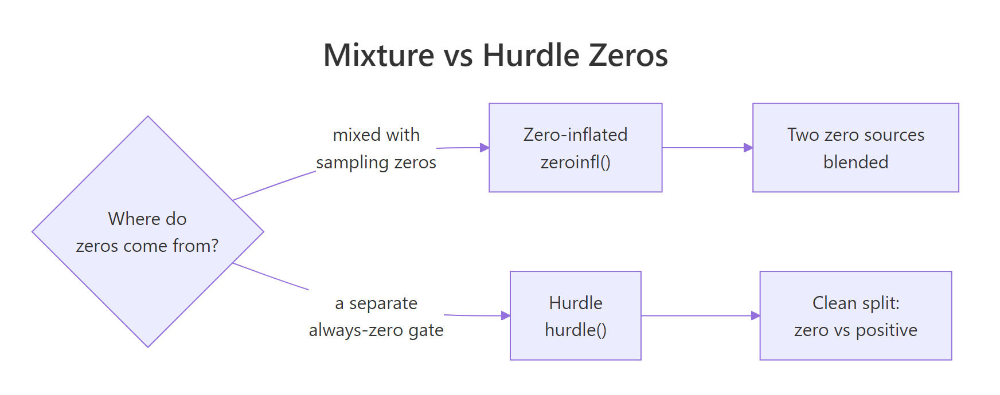

Zero-Inflated Models in R: ZIP & ZINB with pscl Package
Zero-inflated regression models fit count outcomes that have far more zeros than a plain Poisson or negative binomial would predict. In R, you fit them with pscl::zeroinfl(), which splices a logistic model for the "always zero" group onto a count model for everyone else, and reports coefficients for both parts in a single summary.
When should you use a zero-inflated regression?
Poisson regression assumes the zero count at every x is set by the rate lambda(x). When the data contains a separate cluster of "always zero" observations, that assumption breaks: the Poisson fit stretches to explain the zero pile-up and misses everywhere else. The fastest test is to fit a plain Poisson, count how many zeros it predicts, and compare to what you actually saw. Let's simulate an insurance-claims dataset where that gap is obvious.
The data has 448 zeros; the Poisson fit predicts only about 313. That 135-zero gap is the signature of zero inflation. The Poisson model can't be coaxed into explaining the extra zeros without distorting the coefficients, because a Poisson rate that's low enough to match the zero mass would also drag the positive counts too low. You need a model that treats the excess zeros as their own phenomenon.
Try it: Raise the proportion of structural zeros from 0.3 to 0.5 in the simulation (flip the direction of has_past_claim). Predict what happens to the gap between observed and Poisson-predicted zeros, then check.
Click to reveal solution
Explanation: More structural zeros means more observations the Poisson can't explain. The gap tracks the structural share almost linearly.
How do you fit a zero-inflated Poisson with zeroinfl()?
The pscl package provides zeroinfl(), whose formula uses a pipe (|) to separate the count-model predictors from the zero-inflation predictors. The left side of the pipe gets a log link (the Poisson rate); the right side gets a logit link (the probability of being a structural zero). Writing the same predictors on both sides says "I don't yet know which variables drive which component, estimate both."
The ZIP fit now nails the observed zero count, because it has an explicit component for the extra zeros. That's a necessary sanity check, but not sufficient, you still need to look at the coefficients and at how the count component changes once the zero pile-up is accounted for separately.
The top block describes what drives the count among active policyholders: premium and age both raise the claim rate, has_past_claim no longer has a significant effect once the zero-inflation component absorbs it. The bottom block describes what makes a policy a structural zero: has_past_claim dominates, its negative coefficient means having a past claim multiplies the odds of being "always zero" by exp(-5.43), essentially ruling it out. Premium and age barely move the zero component, which is what we wanted; they should live on the count side.

Figure 1: A zero-inflated regression runs two submodels in parallel. The count model estimates lambda(x) for the non-structural observations; the zero model estimates pi(x), the probability an observation is a structural zero. Predictors on the two sides can overlap or be completely different.
| separator is the key zeroinfl() syntax. Count predictors go on the left, zero-inflation predictors go on the right. Write y ~ a + b | c + d to use different predictors on each side, or y ~ a + b | a + b to use the same set on both.Try it: Fit a ZIP where the zero-inflation side has an intercept only (| 1). Compare log-likelihood to the full ZIP.
Click to reveal solution
Explanation: Without has_past_claim on the zero side, the model has no way to tell structural zeros from sampling zeros, so it collapses back toward a plain Poisson fit. The log-likelihood drop of ~240 across three degrees of freedom is huge.
What does ZINB add over ZIP?
Zero inflation handles the extra zeros, but the ZIP model still assumes the non-structural counts are Poisson, so their variance equals their mean. When those counts are themselves overdispersed, ZIP understates uncertainty in exactly the way plain Poisson does. Zero-inflated negative binomial (ZINB) swaps the Poisson count component for a negative binomial, adding a dispersion parameter, theta, that lets variance grow with the mean.
The ZINB mass function keeps the mixture structure but uses the NB probability for the count component. The probability of a zero is:
$$P(Y = 0) = \pi + (1 - \pi) \cdot \left(\frac{\theta}{\theta + \mu}\right)^{\theta}$$
Where:
- $\pi$ = probability of being a structural zero (logistic component)
- $\mu$ = mean of the count component (log-link, depends on x)
- $\theta$ = dispersion parameter of the negative binomial
As $\theta \to \infty$, the NB collapses back to Poisson and ZINB reduces to ZIP. Small theta means heavy overdispersion on top of zero inflation.
A large theta, 35 here, means the count component is essentially Poisson already. In this simulation we didn't add overdispersion on top of the zeros, so ZINB has no extra variance to absorb. Compare against a dataset where real counts are overdispersed and you'll see theta drop to single digits.
ZIP beats plain Poisson by about 370 AIC units, enormous, driven entirely by the zero-inflation component. ZINB and ZIP are within 2 AIC units, so the extra theta parameter isn't earning its keep here. On this data, ZIP is the right choice. On data with overdispersion too, ZINB would open a similar gap over ZIP.
In value[[3L]](cond) : system is computationally singular, try simpler formulas, standardize numeric predictors, or pass starting values via the start argument. A ZINB fit that "works" but returns theta with an enormous SE is not a good fit.Try it: Extract theta directly from zinb_fit$theta and compute alpha = 1/theta, the over-dispersion parameter used in some software.
Click to reveal solution
Explanation: Small alpha means the count component is nearly Poisson. Overdispersed datasets typically show alpha between 0.5 and 5.
How do you specify different predictors for the count and zero parts?
Nothing forces the two components to share predictors. In the insurance example, has_past_claim is the only plausible driver of "always zero" status; a policyholder who has never claimed tends to stay at zero across years. Premium and age, by contrast, plausibly drive how many claims an active policyholder makes, not whether they claim at all. Encoding that theory directly gives a simpler, more interpretable model.
The sparser split model actually beats the full ZIP by a small margin, despite using three fewer parameters. AIC penalizes parameters, so when the extras don't help, you lose points for including them. Regression decisions are about theory first: if you know a variable drives a particular component, put it there; if it might drive either, test both placements.
Each extra dollar of premium multiplies the claim rate by 1.002 (0.2% higher per dollar, so 20% higher per 100 dollars). Each extra year of age adds 1.5% to the rate. On the zero side, having a past claim multiplies the odds of being a structural zero by 0.004, effectively ruling it out. These are the numbers you report.
y ~ x1+x2+... | x1+x2+... first, look at the zero-inflation summary, and drop variables whose zero-side coefficients are small and non-significant. The AIC() comparison is your arbiter.Try it: Move age from the count side to the zero side and see how AIC shifts.
Click to reveal solution
Explanation: Putting age on the wrong side costs ~90 AIC units. Where variables live matters more than how many variables you use.
How does hurdle regression differ from zero-inflation?
Zero-inflated models treat zero as a mixture of two sources: some rows are structurally always zero, others happen to draw zero from the count process. A hurdle model treats every zero as coming from a separate "gate" process, and the positive counts from a zero-truncated count distribution. Which is right depends on what you think is generating the zeros.

Figure 2: The same zero on the left-hand side of your dataset can be modelled two ways. Zero-inflation blends structural zeros and count-zero draws (you can't tell them apart). Hurdle says every zero comes from a single gate; positive counts come from a separate truncated process.
The hurdle count component is numerically close to the ZIP count component on this data, unsurprising, because the structural-zero process is nearly deterministic (driven entirely by has_past_claim). When the gate and the mixture produce similar fits, they agree the zeros are "clean": once you know has_past_claim, you know whether the row is zero.
Hurdle and ZIP-split are the AIC winners here (actually identical up to optimisation noise, because the hurdle and split-predictor ZIP have the same structure on this data). Both outperform plain Poisson by ~370 AIC units. The predicted-zero column is also informative: any model that can absorb extra zeros nails the observed count; plain Poisson is off by 135. When two models tie on AIC, pick by interpretability.
Try it: Compute delta-AIC between ZIP (full) and hurdle, and state which wins and by how much.
Click to reveal solution
Explanation: Hurdle beats the full ZIP by about 4 AIC units, slight evidence in favour of hurdle. Against zip_split they would tie. Small gaps like this mean either model is defensible; pick by interpretation.
How do you predict and interpret new observations?
A fit model isn't useful unless you can predict for new rows. The predict() method on a zeroinfl object supports four type values, each answering a different question about a new observation.
For the typical customer, the expected count (1.25) is close to the count rate (1.34), because the structural-zero probability is low (6%); they are almost certainly "active." For the high-risk customer (higher premium, older), the expected count rises to 2.86, driven almost entirely by the count component. For the never-claimed customer, the structural-zero probability is 0.94, so the expected count collapses to 0.08 even though the count rate alone would predict 1.34.
The type = "prob" output gives the probability of each exact count, so you can answer questions like "what's the chance this customer files two or more claims?" Just sum the columns past the threshold you care about.
type = "response" for the unconditional expected count and type = "zero" for the structural-zero probability. type = "count" gives the count-component rate assuming the row is not a structural zero; it's useful for counterfactual questions ("if this policyholder were active, how many claims would we expect?").Try it: Predict the probability that a 40-year-old policyholder with premium = 500 and has_past_claim = 1 files exactly 2 claims next year.
Click to reveal solution
Explanation: predict(fit, newdata, type = "prob") returns a matrix with one column per observed count value. Indexing by "2" extracts the column for exactly two claims.
Practice Exercises
Two capstone exercises using the canonical bioChemists dataset from pscl: publication counts for 915 biochemistry PhD students. Predictors are gender (fem), marital status (mar), number of kids under 5 (kid5), PhD-program prestige (phd), and mentor productivity (ment).
Exercise 1: Pick ZIP vs ZINB on bioChemists
Fit a ZIP and a ZINB on bioChemists using art ~ . | . for both. Compare by AIC and state which model wins. Explain the result in one sentence: what in the data drives the winner?
Click to reveal solution
Explanation: ZINB beats ZIP by ~63 AIC units, strong evidence. The non-zero article counts are themselves overdispersed (a few students publish unusually prolifically), so the negative binomial count component earns its extra parameter.
Exercise 2: Theory-driven predictor separation
Fit a ZINB on bioChemists with different predictors on the count and zero sides. Put variables on the side where they make theoretical sense (think: what determines whether a student publishes at all vs how many they publish?). Then predict the expected count for a new student: female, married, 2 young kids, phd = 3.0, ment = 10. Save the result to my_result.
Click to reveal solution
Explanation: About 1 article expected. Mentor productivity is the key driver of whether a student publishes at all (zero component); the other variables shape how many, once publishing. A sparse zero component generalises better than a full one when theory supports it.
Complete Example
A full workflow on bioChemists: diagnose the zero issue, fit ZIP and ZINB with theory-driven separation, compare, and predict for two student profiles.
The ZINB wins by 140+ AIC units over plain Poisson and 65 over ZIP, an overwhelming case. Among publishing students, women publish at 0.80x the rate of men, each young kid cuts output by 18%, and each extra mentor publication adds 0.7% to the rate. On the zero side, each extra mentor publication multiplies the odds of being a "never publisher" by 0.88, about 12% lower per unit, which confirms the theory: productive mentors keep students publishing at all. The high-mentor profile is expected to produce 2.4 articles; the low-mentor profile, 0.5.
Summary
| Question | Signature in data | R call | |
|---|---|---|---|
| Do I need zero inflation? | observed zeros far exceed Poisson-predicted zeros | fit Poisson, compare sum(dpois(0, fitted(fit))) to sum(y == 0) |
|
| ZIP vs ZINB? | non-zero counts also overdispersed | zeroinfl(..., dist = "negbin") |
|
| Zero-inflated vs hurdle? | structural zeros mixed with sampling zeros, or one gate? | zeroinfl() for mixture, hurdle() for gate |
|
| Same or different predictors per component? | theory | `y ~ x_count \ | x_zero` |
| Interpret coefficients | exponentiate | count side = IRR, zero side = OR | |
| Predict for a new row | need expected count, structural-zero risk, or full distribution? | type = "response" / "zero" / "count" / "prob" |
References
- Zeileis, A., Kleiber, C., & Jackman, S. (2008). Regression Models for Count Data in R. Journal of Statistical Software, 27(8). Link
- pscl package CRAN vignette, Regression Models for Count Data in R (countreg). Link
- pscl::zeroinfl reference. Link
- Cameron, A. C. & Trivedi, P. K. Regression Analysis of Count Data, 2nd Edition. Cambridge University Press (2013).
- UCLA OARC, Zero-Inflated Poisson Regression R Data Analysis Example. Link
- UCLA OARC, Zero-Inflated Negative Binomial Regression R Data Analysis Example. Link
- Wilson, P. (2015). The misuse of the Vuong test for non-nested models to test for zero-inflation. Economics Letters, 127, 51-53.
- Long, J. S. (1990). The origins of sex differences in science. Social Forces, 68(4), 1297-1316. (bioChemists dataset.)
Continue Learning
- Poisson Regression in R, the parent tutorial that introduces count regression and the overdispersion check you ran above.
- Negative Binomial Regression in R, for overdispersion without zero inflation; a useful comparator.
- Zero-Inflated Distributions in R, the distribution theory behind ZIP and ZINB, with deeper treatment of structural vs sampling zeros.